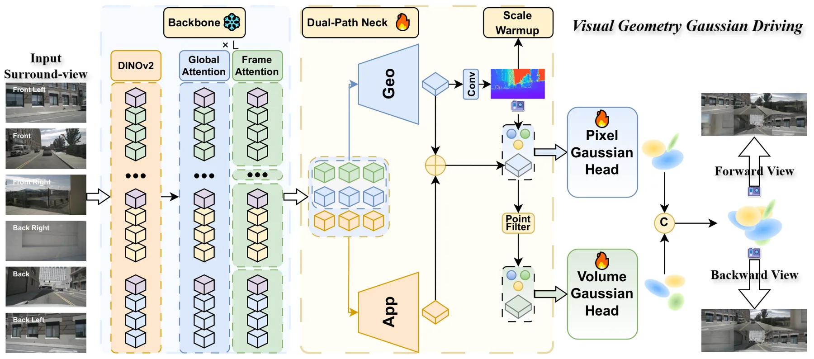
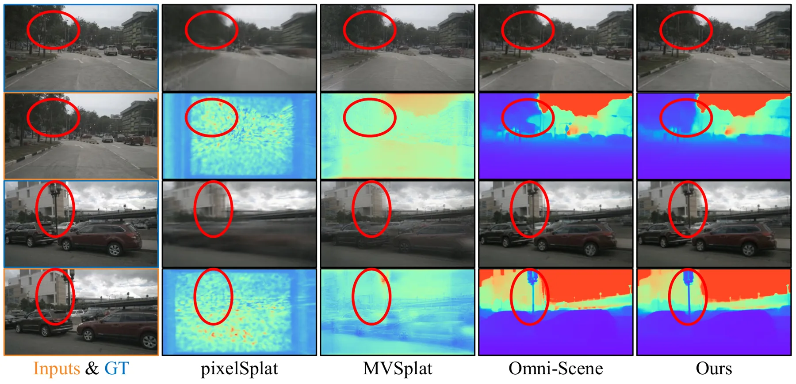
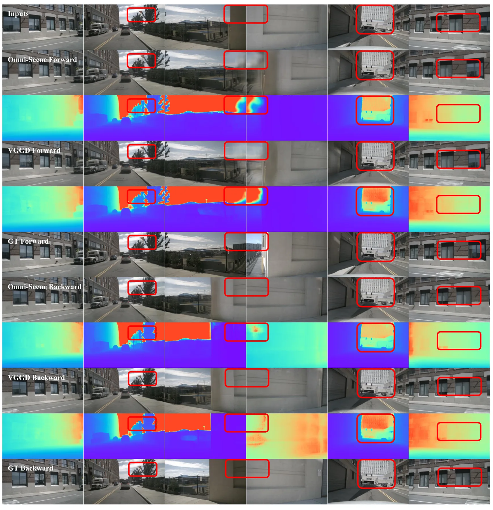
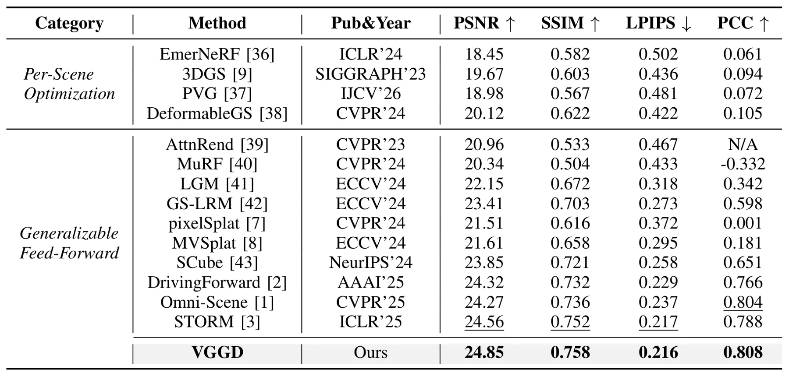

VGGD：视觉几何基础模型感知的单帧环视驾驶重建Visual Geometry Foundation-Aware Gaussians for Single-Frame Surround-View Driving Reconstruction
针对自动驾驶环视低重叠的关键几何难题，基础模型先验与尺度稳定机制值得关注；绝对尺度、动态场景和定位收益仍不明确。
一句话工作总结
将 VGGT 几何先验前移到环视特征端，以双路径表示和尺度预热稳定稀疏单帧 3DGS 重建。
摘要
VGGD 面向相机重叠极少的单帧 surround-view driving reconstruction，利用 VGGT 提供可迁移的多视图几何先验 token。Dual-Path Neck 将 geometry-consistent 与 appearance-aware 表示解耦，以改善弱观测区域的外观补全；Scale Warmup 稳定早期几何学习并抑制 ego-pose 变化下的尺度漂移；hybrid pixel-volume Gaussian decoder 最终输出可渲染 3D Gaussian 场景。作者称该方法在 nuScenes 单帧 benchmark 上取得最佳整体渲染质量并改善相对几何一致性。
Single-frame surround-view reconstruction faces severe geometric instability and rendering artifacts due to minimal inter-camera overlap. While existing methods rely on complex decoders or auxiliary cues, they remain bottlenecked by the weak geometric capacity of upstream features. We argue that leveraging pretrained visual geometry priors strengthens upstream representations and alleviates the geometric ambiguity in sparse surround views. To this end, we propose VGGD, a visual geometry foundation-aware 3D Gaussian Splatting framework for feed-forward surround-view driving reconstruction, which shifts geometric modeling to the frontend and adapts foundation priors to the driving camera setting. First, VGGD leverages VGGT to provide transferable multi-view geometric prior tokens. Next, we introduce a Dual-Path Neck to decouple geometry-consistent and appearance-aware representations, improving appearance completion in weakly observed regions. We further apply Scale Warmup to stabilize early geometry learning and suppress scale drift under ego-pose changes. Finally, we use a hybrid pixel--volume Gaussian decoder to produce a renderable 3D Gaussian scene for novel-view synthesis. Experiments on the nuScenes single-frame benchmark show that VGGD achieves the best overall rendering quality among the compared methods and improves relative geometric consistency.
中文解读摘录
图表/页面预览

{kind=link}

{kind=link}

{kind=link}

{kind=link}
